一般同仁操作手冊
發現設施或設備壞了，用手機就能報修，拍照給總務看，也能隨時查進度。各樓層統一由護理師報修，其他同仁發現損壞請先告訴樓層護理師。
一、快速指引
每個功能的步驟，熟悉後看這裡就夠了。點功能名稱可跳到完整說明。
| 1. 第一次使用：確認身分 | 掃報修 QR Code → 輸入姓名、手機 → 按 確認 |
| 2. 報修 | 我要報修 → 選緊急程度 → 選樓層區域、填地點 → 選報修類別 → 填項目與問題 → 拍照（選填） → 送出報修 |
| 3. 看處理進度 | 我的報修 → 點單子 → 看狀態與處理紀錄 |
| 4. 補照片 | 我的報修 → 點單子 → ＋加照片 → 選照片 |
| 5. 撤回報修 | 我的報修 → 點「待接單」的單 → 撤回這張單 → 再按一次 確定撤回？ |
| 6. 看全院進行中的報修 | 進行中 → 選樓層區域 |
| 7. 換人使用 | 畫面最下方 換人使用 → 按 確定 |
二、完整說明
圖中橘色框是要按或要填的地方。圖裡的人名和單子都是示範資料。
1第一次使用：確認身分
每支手機或每台電腦，第一次打開系統時要確認一次身分。確認過後這台裝置就會記住你，之後打開直接使用，不用再輸入。
- 用手機掃張貼的報修 QR Code，或在瀏覽器打開 https://chienxinyuannh.github.io/repair/。
- 輸入姓名和手機號碼，按 確認。手機號碼有沒有加「-」都可以。

輸入姓名和手機後按「確認」 - 畫面出現分頁就完成了。
小技巧把網頁加到手機主畫面，下次一點就開。iPhone：Safari 下方「分享」>「加入主畫面」。Android：Chrome 右上「⋮」>「加到主畫面」。
注意輸入正確卻無法通過，通常是名單上沒有你，或登記的手機號碼不同，請找主任確認。
回快速指引2報修
打開系統就是報修畫面。標「*」的欄位一定要填。
- 按 我要報修 分頁，先選緊急程度。怎麼選請看下面的表。
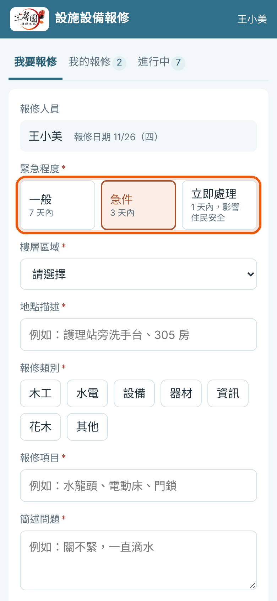
先選緊急程度 - 選樓層區域，再填地點描述，寫到總務一看就找得到，例如「207 房浴室」「護理站旁洗手台」。
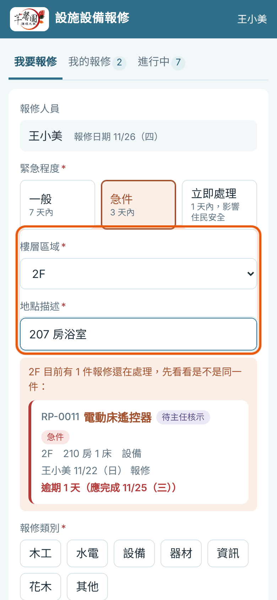
樓層區域和地點描述 - 如果這個樓層區域還有沒處理完的單，畫面會列出來。先看看是不是同一件，是的話就不用再報，避免重複。
- 選報修類別，不確定就選「其他」。報修項目寫東西的名稱，簡述問題寫你看到的狀況。
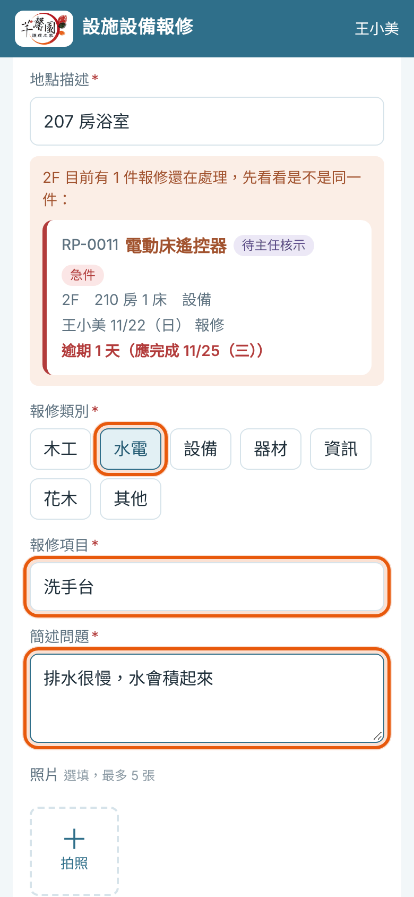
報修類別、項目與問題 - 按 ＋拍照 拍下損壞的地方，也可以從相簿選，最多 5 張。點照片可放大，按右上的 ✕ 刪掉。
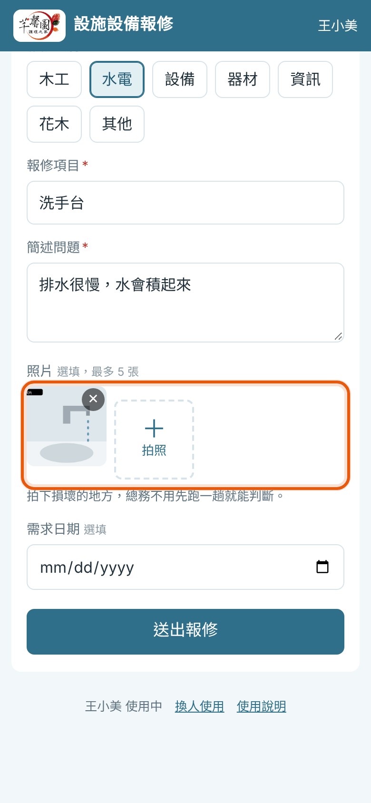
拍照或從相簿選照片 - 需要在某天前修好才填需求日期，沒有就空著。檢查一遍後按 送出報修。
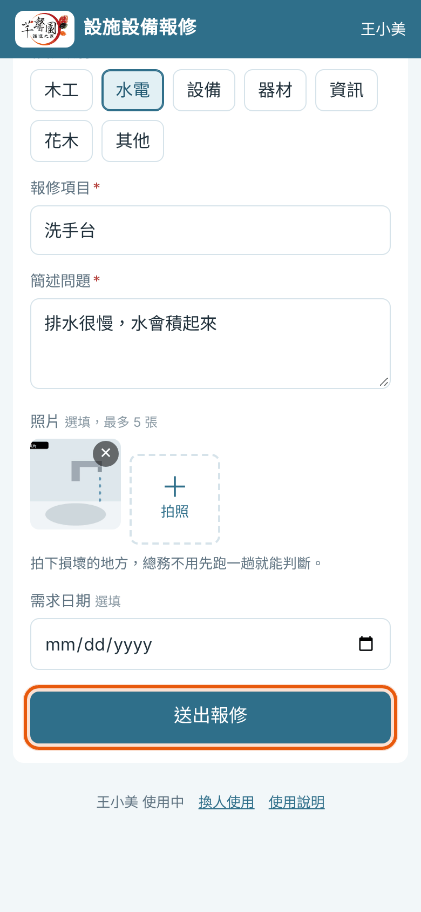
最後按「送出報修」 - 畫面顯示單號就送出成功了。總務打開系統就會看到，不用另外通知（立即處理除外）。
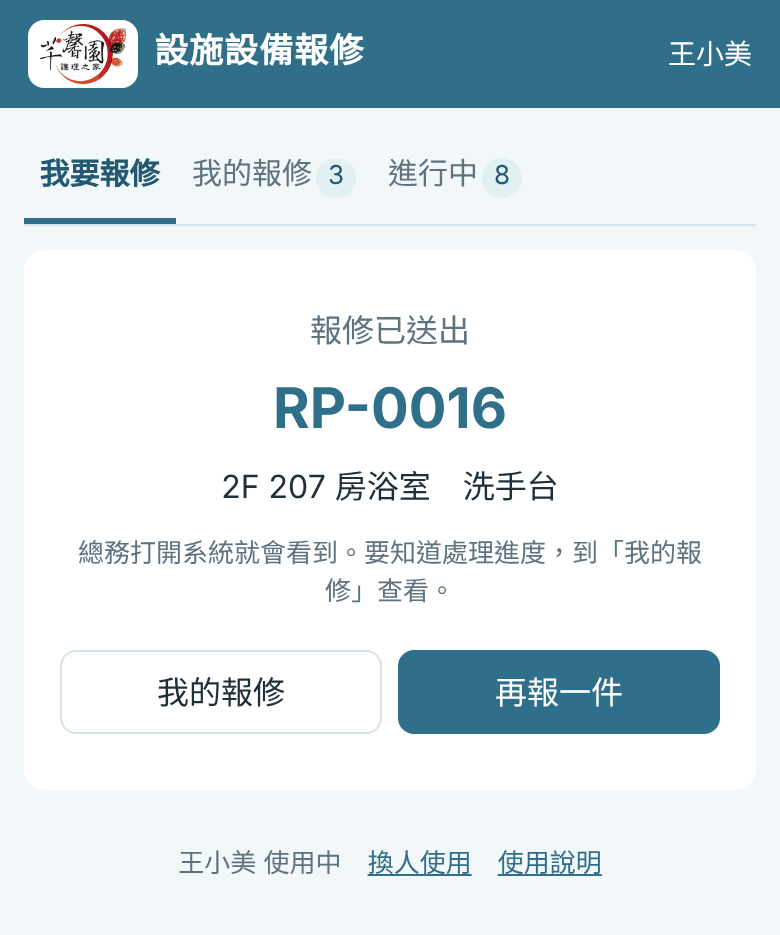
送出成功，顯示單號
緊急程度怎麼選
| 緊急程度 | 時限 | 什麼時候選 | 例子 |
|---|---|---|---|
| 立即處理 | 1 天內 | 影響住民安全 | 呼叫鈴沒反應、扶手鬆動、地面破損會絆倒、插座冒煙或漏電 |
| 急件 | 3 天內 | 影響照顧工作，但暫時有替代辦法 | 一張電動床不能升降、冷氣不冷、某間浴室沒熱水 |
| 一般 | 7 天內 | 不影響安全，也不影響工作 | 燈管閃爍、門把鬆、抽屜卡住、牆面油漆剝落 |
注意選「立即處理」的單，送出後請同時當面或打電話告訴總務。系統不會另外發通知，總務不一定剛好在看。
小技巧照片很重要。總務看了照片，常常不用先跑一趟就知道要帶什麼工具和零件。
注意送出時如果出現「連線失敗」，填好的內容不會不見，等網路恢復後再按一次 送出報修。
回快速指引3看處理進度
- 按 我的報修，上面是還在處理的單，下面是近半年已經結束的單。紅字表示逾期。
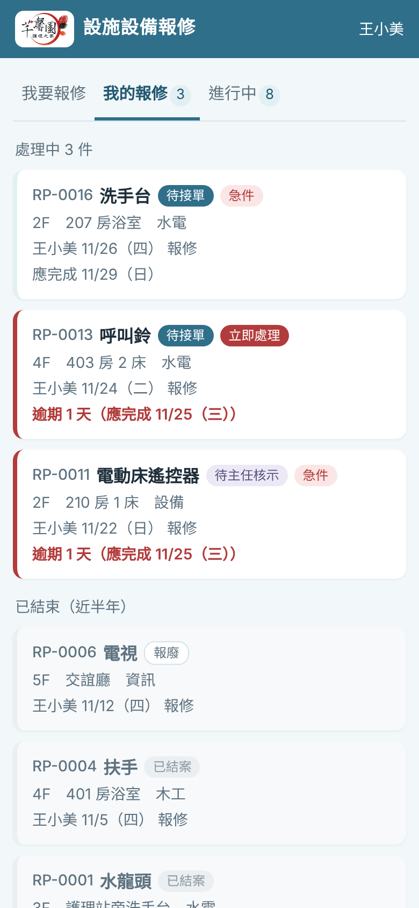
「我的報修」清單 - 點一張單，可以看到報修內容、照片，以及總務的處理情形。
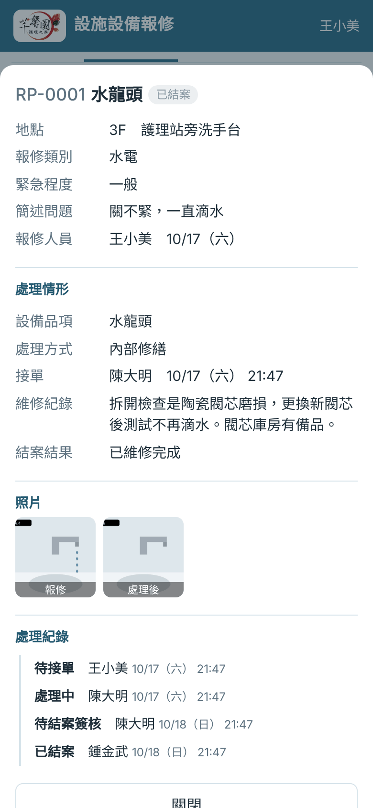
單子的明細 - 往下捲到處理紀錄，每一步是誰、在什麼時間做的都列在這裡。
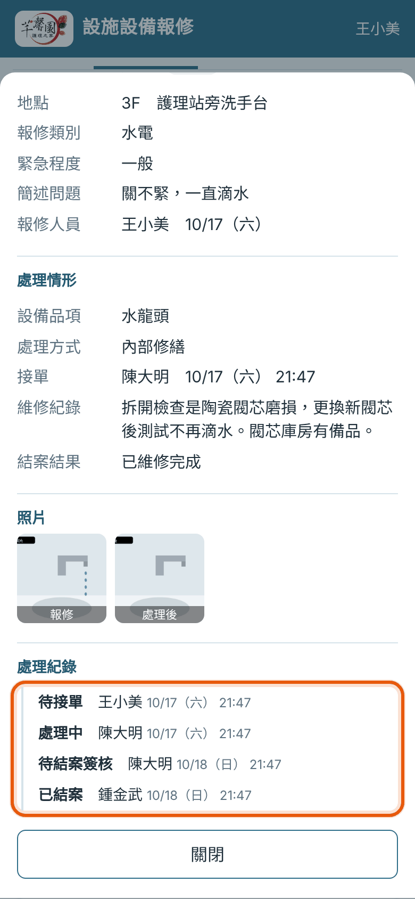
處理紀錄
小技巧狀態變成「待結案簽核」表示總務已經修好，在等主任確認；變成「已結案」就是全部完成。各狀態的意思請看附錄。
回快速指引4補照片
送出後才想到要拍照，或狀況變嚴重想補一張，都可以補上。
- 打開自己報修、還沒結束的單，在照片區按 ＋加照片，拍照或從相簿選。
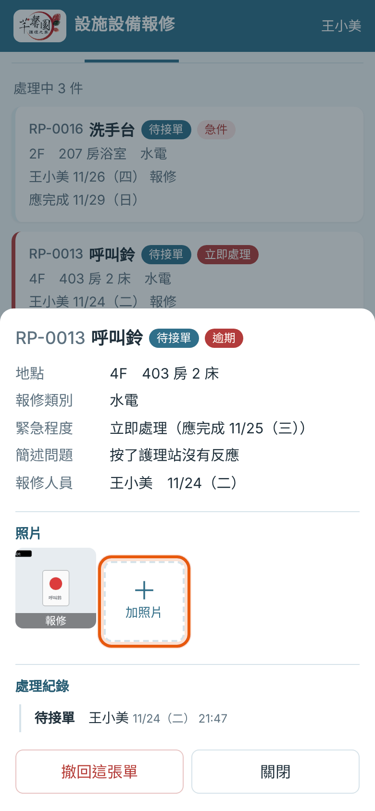
按「＋加照片」
5撤回報修
報錯了、重複報，或東西自己恢復正常，可以撤回。
- 打開要撤回的單，按 撤回這張單。
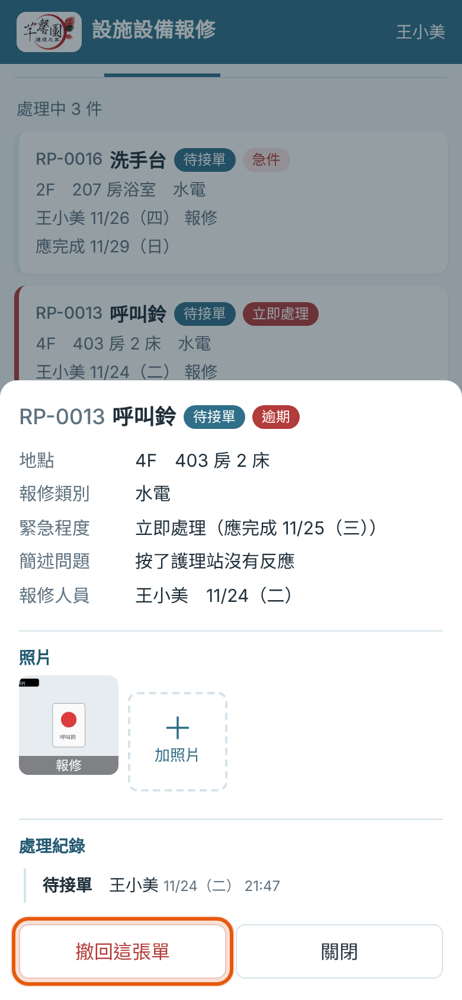
按「撤回這張單」 - 按鈕會變成「確定撤回？」，4 秒內再按一次才會真的撤回，避免按錯。
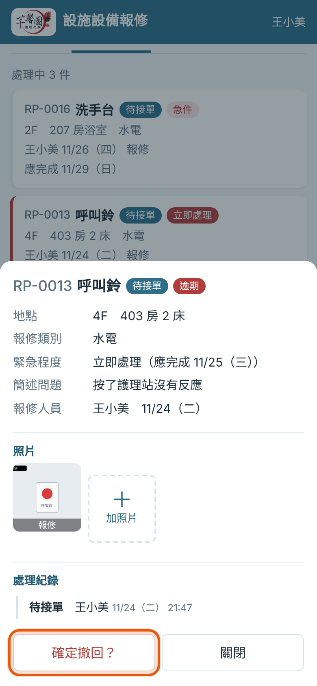
再按一次確定
注意只有總務還沒接單（待接單）時可以撤回。總務接單後，請直接告訴總務。
回快速指引6看全院進行中的報修
- 按 進行中，可以看到全院還沒處理完的單。用左上的選單只看某個樓層區域。逾期和立即處理的排在最前面。
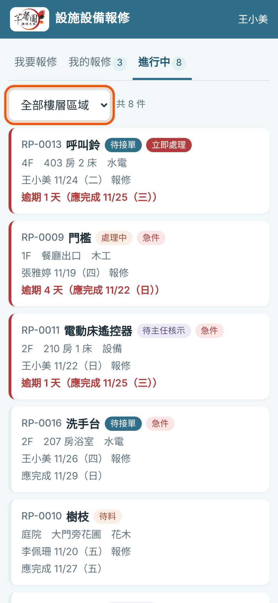
「進行中」清單
7換人使用
公用電腦要交給別人用，或借別人的手機報修後要還回去時使用。按了之後這台裝置會忘記你，下次要重新確認身分。
- 捲到畫面最下方，按 換人使用。旁邊的 使用說明 會打開這份手冊。

畫面最下方的「換人使用」與「使用說明」 - 看清楚提示後按 確定。

確認要讓這台裝置忘記你
三、附錄
單子的狀態
| 狀態 | 意思 |
|---|---|
| 待接單 | 剛送出，總務還沒接 |
| 處理中 | 總務已接單，正在處理 |
| 待料 | 等零件或工具 |
| 待主任核示 | 要請廠商修或要報廢，等主任同意 |
| 委外處理中 | 主任已同意，由廠商處理 |
| 待結案簽核 | 已經修好（或確定報廢），等主任最後確認 |
| 已結案 | 全部完成 |
| 報廢 | 東西報廢，不修了 |
| 退回 | 不處理，例如重複報修、報修人撤回，原因會寫在單上 |
超過應完成日還沒修好的單，會標紅色的「逾期」。
常見問題
- 換了新手機怎麼辦？
- 用新手機再確認一次身分就好。舊手機如果遺失，請主任在系統裡幫你「重設驗證」，舊手機就不能再用。
- 送出後發現寫錯了？
- 總務還沒接單時，撤回再重報一張。已經接單的話，直接告訴總務。
- 我的單被退回了？
- 打開單子看退回原因，例如重複報修，代表同一件事已經有人報過。
- 別的樓層壞了，我可以報嗎？
- 可以，樓層區域選實際損壞的地方就好。
- 怎麼知道修好了？
- 到「我的報修」看狀態。「待結案簽核」是總務修好了，「已結案」是主任也確認了。